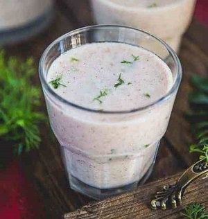
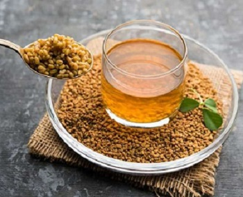
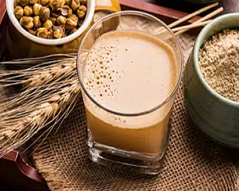
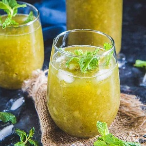
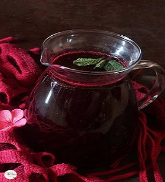
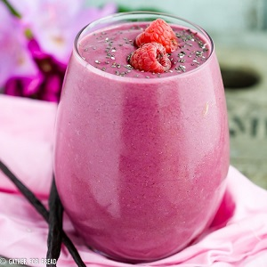
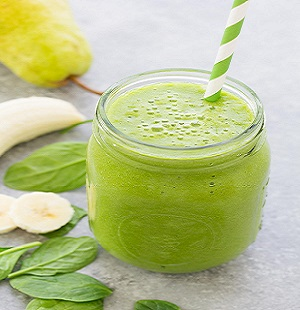

1. RAGI MALT
Promotes weight loss, controls diabetes, lowers cholesterol and battles anaemia. Gluten free and rich in fibres.
METHOD:
- In a bowl mix 3-4 spoons of ragi flour and add water enough to make a paste.
- Boil 1 cup of water, add a pinch of salt and add the ragi paste, cook it for 2-3 mins.
- Once it cools down add 1/2 tsp of lemon and 50g of curd and mix it well and your drink is ready.
2. LEMON HONEY WATER

Refreshing weight loss drink, but usually made incorrectly and causes problems. Detoxifies the body and strengthens immunity.
METHOD:
- Take 200ml of luke warm water and add 1 tsp of honey and juice of lemon.
- Now you can drink it slowly(never gulp it down at once).
3. FENUGREEK DRINK
It burns fat very fastly and doesn’t allow you to gain weight.
METHOD:
- Take water in a pan and add 1 tsp of fenugreek seeds (methi ).
- Boil it on medium flame.
- When it boils such that water changes its color and its starts to boil then pour it into a glass.
- Cool it down and have it every morning to detoxify your body.
4. BARLEY CHANNA SATTU
It quenches thirst, cools the body, and gives instant energy, especially in the summer. It is good for acidity, urinary tract infection, skin disorders, and heat-induced headache.
METHOD:
- Take 1.5 tsp roasted chana and 1.5 tsp of puffed barley in a grinder and grind it well.
- Now add 1.75 cup of water in that powder mixture, now add a bit cumin powder, black pepper powder, rock salt and 1.5 tsp of lemon juice.
- Now blend all of this well and your drink is ready.
5. AAM PANNA
Raw mango is very good for weight loss .
METHOD:
- Take 2 raw mangoes, peel and cut it in a pan and add 1 cup of water with a small piece of ginger.
- Now in a grinder add mint leaves, fennel seeds, 1/2 tsp cumin powder ,1/4 tsp black pepper powder, rock salt and 2 tsp of water , grind these ingredients.
- Now add the aam mixture into it and grind it.
- Now u can dilute this by adding water to whatever concentration you like and have it.
6. LEMON MINT WATER
METHOD:
- Take juice of half of a lemon, add black salt, black pepper, jaggery sugar and roasted cumin powder.
- Now add mint leaves and water and blend all of this (you may even add ginger a bit) and your drink is ready.
7. CARROT KANJI
METHOD:
- Take 5 black carrots or 4 red carrots with 1/3 of a beetroot, chop them and put it in a jar.
- Now add 3-4 tsp mustard seeds, 1 tsp salt, chilli powder, 1/4 tsp black pepper and 1/4 tsp turmeric and 2.5 to 4 litres of water and close the mouth of the jar.
- Now keep it in the sun for 3 to 5 days (in summers 3 days is enough )and it would be ready.
8. VANILLA PROTEIN SMOOTHIE
METHOD:
- In a blender add the unsweetened almond milk, frozen blueberries(or banana or strawberries), and 1 scoop of vanilla protein powder.
- Now, blend everything until it’s very smooth and your drink is ready.
9. FRESH FRUIT SMOOTHIE
METHOD:
- Take 1/2 cup water (or orange juice), 1 green apple, 1/2 cup frozen pineapple chunks, 1/2 frozen banana, 1/2 inch fresh ginger, peeled and minced, 1 cup fresh spinach, small handful fresh cilantro, 1 tablespoon fresh lime juice in a blender, and blend until smooth. Pour into a glass and serve right away.
- If you don't have have a high-speed blender, I recommend blending the spinach, cilantro, and ginger with the water first, to help break them down completely. Then add in the fruit and lime juice, and blend again and your smoothie is ready.
10. GREEN MONSTER SMOOTHIE
METHOD:
- Take 1 cup plain or vanilla coconut milk, 150ml of vanilla yogurt, 1 ripe banana and 2-4 cups raw, organic spinach in a blender.
- After blending all of this you can liquefy it and have it.